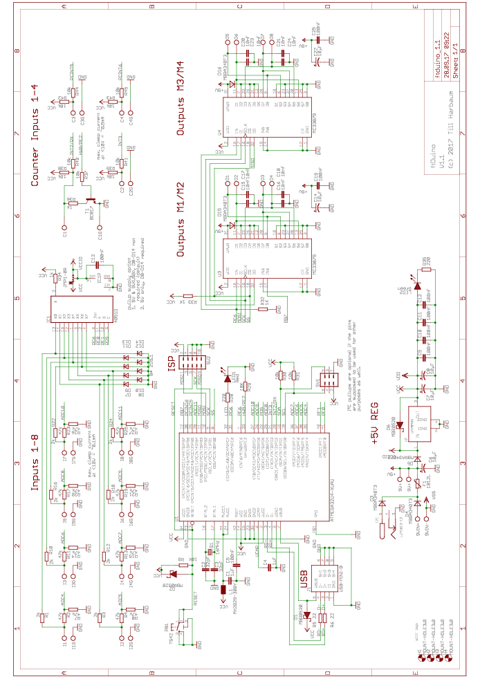
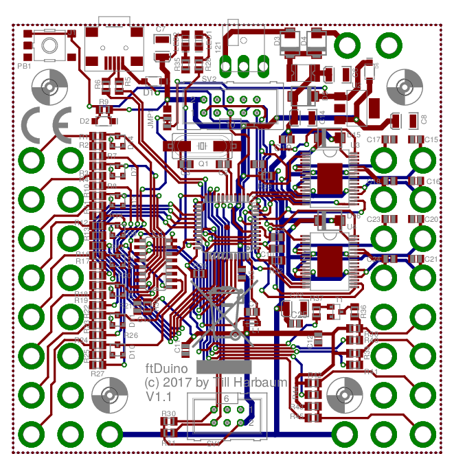
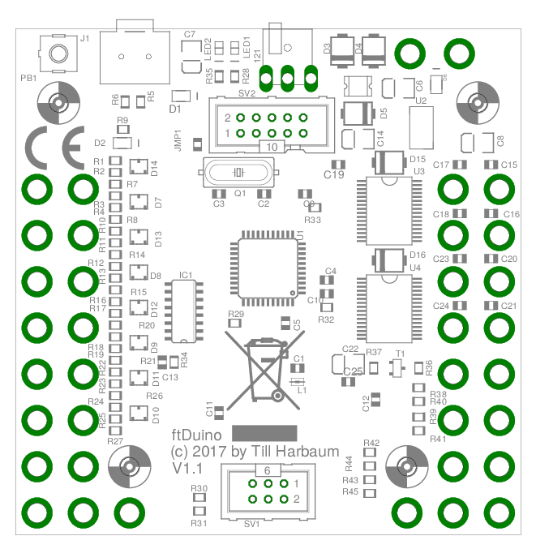
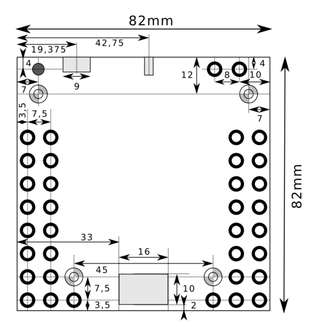
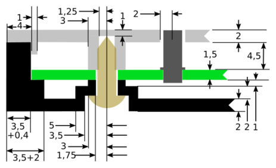
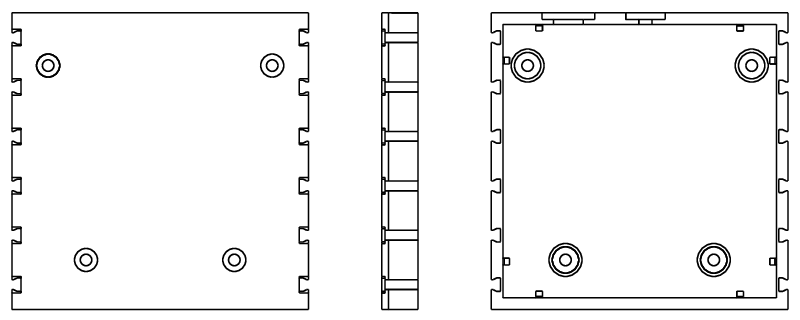
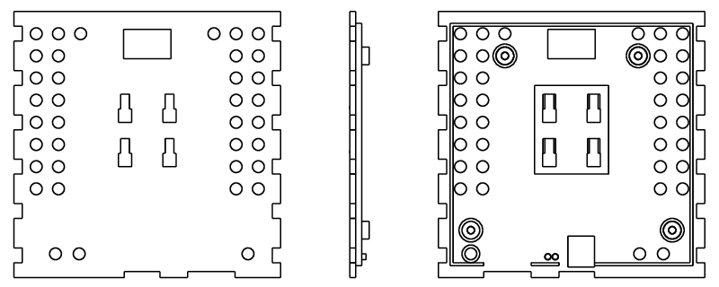

Abbildung 1.1: Schaltplan ftDuino Version 1.1

Abbildung 2.2: Platinenlayout ftDuino Version 1.1

Abbildung 3.3: Bestückungsplan ftDuino Version 1.1

Abbildung 4.4: Maße A ftDuino Version 1.1

Abbildung 4.5: Maße B ftDuino Version 1.1

Abbildung 5.6: Untere Gehäuseschale

Abbildung 5.7: Obere Gehäuseschale